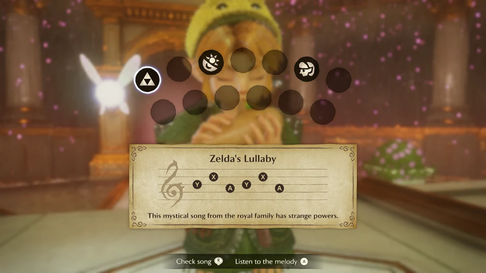
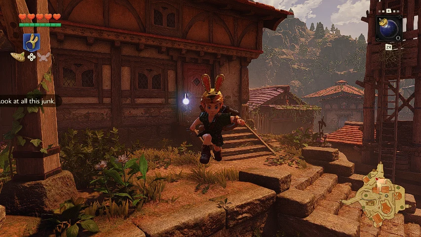
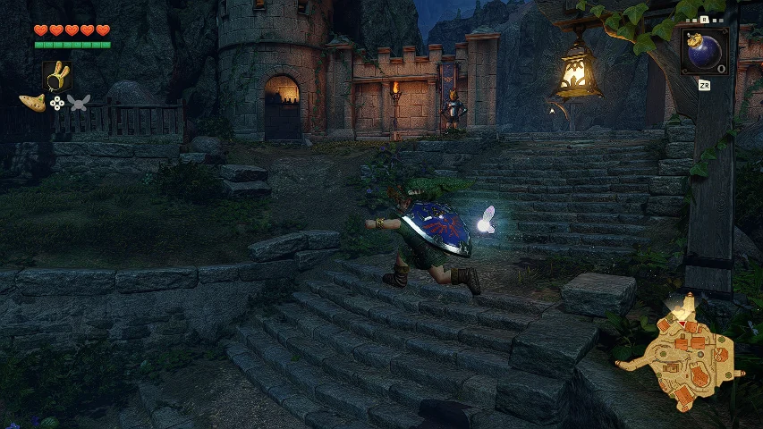

Watch videoSongbook Autoplay
Play a learned song right from the songbook. Draw the Ocarina, hold ZL, select a song with A, then release ZL.

Unofficial gameplay mods
Download gameplay patches for the Nintendo Switch 2 remake and get them running in Lichii.
Requires game v1.1.1
Gameplay patches

Watch videoPlay a learned song right from the songbook. Draw the Ocarina, hold ZL, select a song with A, then release ZL.

Watch videoRun off a ledge to jump like in the N64 original. Ease the stick to step off normally. Manual jump still works.
Get a 50% boost to normal ground movement while wearing the Bunny Hood, within the game’s speed limits.
Setup guide
Use game version 1.1.1 of the Nintendo Switch 2 remake. Testing was done in Lichii. Physical Switch 2 compatibility is unverified.
Close the game. In Lichii, right-click Ocarina of Time and choose Open Mod Data Location.
Extract the named mod folder into that location. Replace the old mod folder when updating.
Enable the mod in the game’s add-ons and launch the game.
Folder layout Mod Data Location / Mod Name / exefs / <build-id>.ips
To uninstall, close the game and remove the named mod folder.
All mods are free to download. If you’d like to support the project, you can leave an optional Bitcoin tip.
Bitcoin (BTC) address
bc1q0q6zx4hhnmhqfs4qxc2xayrfr5d9z8ukxezawu